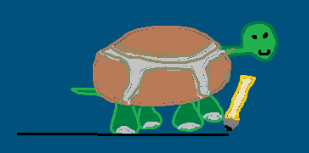
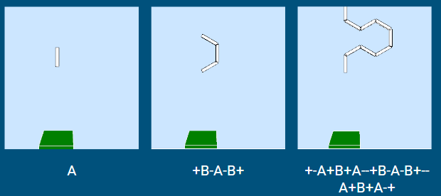
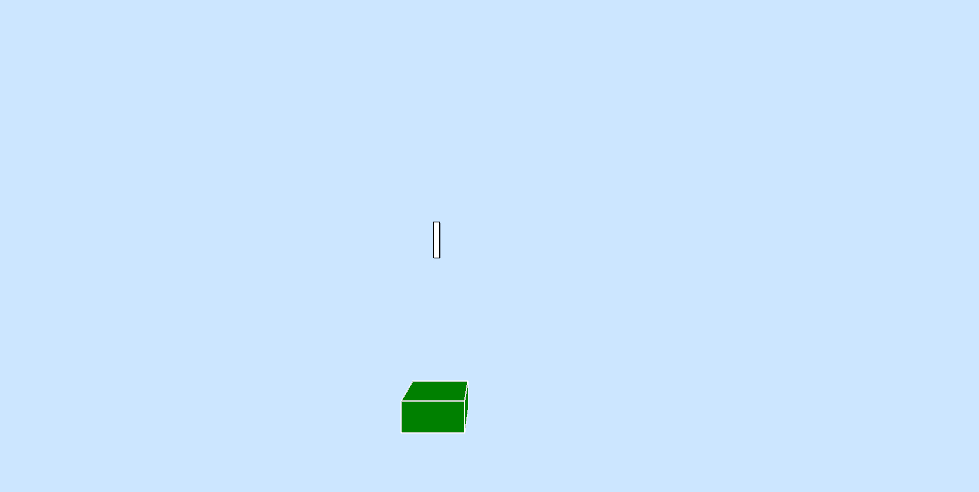
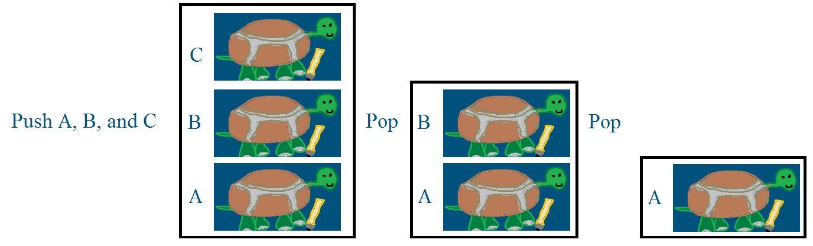
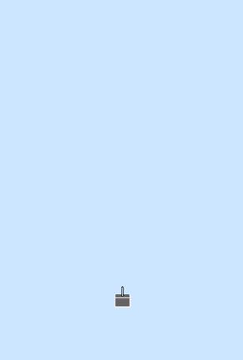
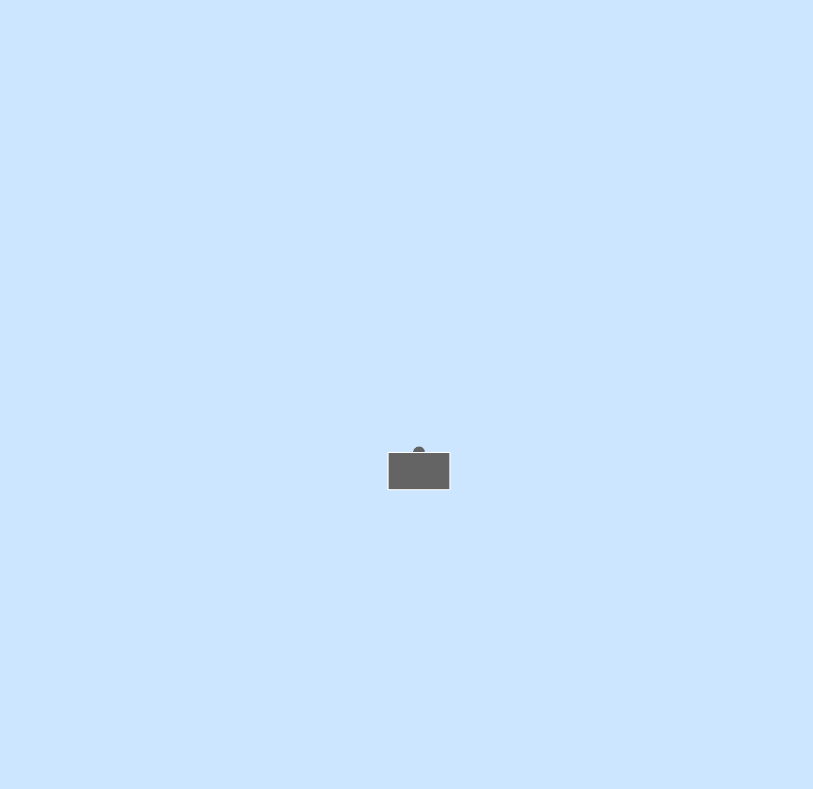

This post is a writeup of a presentation I gave for my college's Computer Science seminar. To jump to the git repository click here.
Lindenmayer Systems, or L systems are recursive rewriting systems which can be used to produce instruction sets for fractals or natural growth patterns. The easiest way to explain L systems is with an example. Start with an axiom (the starting point) and some rules:
Axiom: A
Rule 1: A is replaced with B.
Rule 2: B is replaced with AC.
How do we use these? Lindenmayer systems generate sucessive generations of strings. When we create a new generation we look at the previous generation and the rules. We read the string left to right, replacing characters as per the rules as we go. If there is no rule relating to the replacement of a character, that character persists. Here's what this looks like applied to the axiom and rules from before:
Axiom: A
Gen 1: B -A is replaced with B as per rule 1
Gen 2: AC -B is replaced with AC as per rule 1
Gen 3: BC -A is replaced, C persists
Gen 4: ACC
etc. etc.
This example doesn't produce anything interesting, but hopefully you can now see how the rewriting process works
Here is a more interesting example:
Axiom: A
R1: A -> AB
R2: B -> A

The reason this is more interesting may not be immediately apparent. First let us look at the line lengths: 1,2,3,5,8,13,... This is the Fibonacci sequence! Now let us look at the number of A's in each line compared to the total length of the line: 1:1, 1:2, 2:3, 3:5, 5:8, 8:13, 13:21, 21:34, ... The Fibonacci sequence is hidden in here because the L system grows from A's. If we invert this we have 34/21, which is ~1.619. The ratio of line length to A's converges to the golden ration, which is ~1.618.
This L system is also interesting visually.
Consider the following L system:
Axiom: A
R1: A -> ABA
R2: B -> BBB
Lets take a look at what happens when we try a all the A's with ⬛ and B's with ⬜
0: ⬛
1: ⬛⬜⬛
2: ⬛⬜⬛⬜⬜⬜⬛⬜⬛
3: ⬛⬜⬛⬜⬜⬜⬛⬜⬛⬜⬜⬜⬜⬜⬜⬜⬜⬜⬛⬜⬛⬜⬜⬜⬛⬜⬛
If we then refactor this we get:

Which you may recognize as the Cantor Set, or Cantor Dust. The cantor set has a series of remarkable properties that you can read about hre. Already L systems are proving to be useful.
Turtle Graphics is a graphics system in which a cursor (often visualized as a turtle) moves in space and can leaves a trail as it moves (the distinction between leaving a line and not is often visualized as the turtle dragging a pen on the ground or holding the pen off the page).

The only commands we give the turtle are:
move(distance) - moves forward [distance] units
rotate(axis, degrees) - rotate [degrees] degrees along the [axis] axis, if no axis is given it will rotate around the Z axis (to benifit 2D drawing)
setDraw(boolean) - If set to true, causes the turtle to leave lines as it moves
It is very easy to make the turtle follow a command when it encounters a certain character in an L-System. For instance, we used the following L-System:
Axiom = A
Rule 1 = A → +B-A-B+
Rule 2 = B → -A+B+A-
And the following instruction set:
A | B = move()
+ = turn(90)
- = turn(-90)
Our first three three generations look like this:

I should now point out that this 3D visualization system is something I created for the purposes of this project. It uses Java, Processing, and OpenGL and can be found here. The program makes it very simple to input axioms and rules for an L-system, as well as turtle graphic instruction sets. After the 3D viewer opens up, clicking the up or down arrow increments or decrements the generation of the L-system being displayed. If we do this for the above example we get the Sierpinski arrowhead:

Obviously L-systems and turtle graphics are pretty great at making self reflecting patterns, but how do we use them to make a visual for plants? The real question is how do we model plants as a self-reflective system? Also, how do we create a branching structure with turtle graphics? (in the Sierpinksi arrowhead example, the turtle travels one continuous path) The answers questions are the same: we use a stack of locations. For anybody reading this who isn't a computer scientist, a stack is a data structure where the first thing you put in it is the last thing you get out. You can think of this like a stack of plates, the first plate you put down in a stack is going to be on the bottom, so it's going to be the last plate you pick up when you're ready to use your plates again. It should be noted that putting something onto a stack is called 'pushing' and taking something from the top of the stack is called 'popping.'
In our case we're not using plates, we're using positions of turtles. In the following example I've labeled three turtles: A, B, and C. First we push them all onto the stack. A will be on the bottom because we pushed it first. C will be on top because it was pushed last. Then we pop the stack once. This removes C because it was on top. Then we pop the stack again. This removes B because it was on top.

This system of popping and pushing turtle positions from a stack is how we create branches. Consider the following branching structure:

If our turtle starts at the bottom of this fractal, at the point labeled (A), continues forward to the fork in the road labeled (B), and goes on the path to the left towards (C), it has the unfortunate problem of having a hard time getting to (D). To get to (D) it would have to backtrack to (B) and go right instead. It would have to backtrack in a similar manner to cover all smaller and smaller branches as well. This is where stacks come into play. When the turtle gets to (B) and recognizes that it has a fork in the road, it pushes its location and rotation to stack, so our stack looks like [(B)]. It then continues to (C) and recognizes that it has another fork in the road and pushes (C) to the stack. Our stack looks like [(B), (C)] (the top of the stack is to the right). From here the turtle can go left, finish its business on that branch, pop the stack, which returns (C), and teleport to that location. Now the turtle is back at (C), finishes the branch to the right of (C), and can pop the stack again to return (B) and continue towards (D). This is much simpler and time efficient to program than having the turtle backtrack. It can also be represented as an L-system. The above example is the following L-system:
Axiom: A
Rule 1: A → AA
Rule 2: B → A[B]B
Instruction 1: A | B → Move forward
Instruction 2: [ → turn left and push stack
Instruction 3: ] → turn right and pop stack

This is known as the Pythagoras Tree. While it branches and is represented in 3D, the tree itself only occupies a 2D plane of the 3D space. Additionally, we would like to detect end nodes in the tree so that we can put leaves on them. Also, it doesn't really look like a tree, real plants have variation in them.

This tree solves a few of the issues we discussed: it takes up a 3D space and it has end node detection. The step to make this 3D is very simple: every time the turtle rotates to branch (which in 3D would be around the Z axis), it also rotates in the Y axis. The gif above has it rotate a fixed 30 degrees, but in more complicated examples this value maybe be randomized. To mark end nodes I used a rectangular prism in place of the standard line segment. This is the area in which leaves will be created on the tree. What this didn't solve is the problem of the tree not having any variation. For this we will use a different L-system.

The first pane is the flat L-system, the second is the finished product minus branch thickness, and the final pane is the final product (pardon my camera work). The branch thickness is hard to get right, but involves the size of the stack and a logarithm.

Overall this was a fun project to work on in my free time. I'd never used processing or its Java libraries, and I'd never learned about L-systems before I underwent this project. I definitely recommend looking more into advanced L-systems if you're interested!